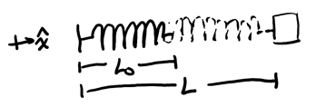
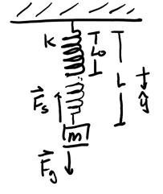

Springs
Table of Contents
1. Spring Force
Consider a spring with negligible mass and natural length \(L_0\) displaced to a new length \(L\) by a block:

The point at which the head of the spring is at the natural length is called the equilibrium position. When the block moves away from this position, it experiences a spring force, which is a restoring force that points back to the equilibrium position of the spring.
1.1. Hooke's Law
This spring force is given by Hooke's law, which states:
\begin{align} \vec{F}_S = -k\vec{x} \end{align}where \(k\) is the spring constant, and $\vec{x} is the displacement vector that points in the direction of displacement and has magnitude \(L-L_0\). The spring constant also measures how "stiff" the spring is: the greater the spring constant, the more stiff the spring.
Example: Block on spring
Consider a hanging spring with natural length \(L_0\) that is extended to a new length \(L\) with a block of mass \(m\):

The origin is set at the equilibrium position of the spring. We want to determine the new length \(L\) after a block of mass \(m\) is placed on the end and is stationary.
For a stationary block, we know that \(F_\text{net} = 0\). Thus, by Hooke's law and Newton's 2nd law, we have:
\begin{align} mg - k(L-L_0) &= 0 \notag \\ k(L-L_0) &= mg \notag \\ L-L_0 &= \frac{mg}{k} \notag \\ L &= L_0 + \frac{mg}{k} \notag \end{align}